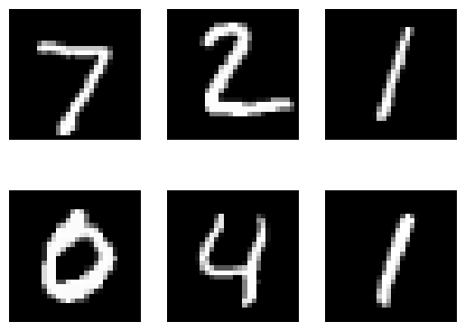

# Load the TensorBoard notebook extensionTensorFlow
Tensor Flow graphs
Reusing TensorBoard on port 6006 (pid 431396), started 0:35:57 ago. (Use '!kill 431396' to kill it.)from tensorboard import notebook
notebook.list() # View open TensorBoard instancesNo known TensorBoard instances running.notebook.display(port=6006, height=1000)import torch
import torch.nn as nn
import torchvision
import torchvision.transforms as transforms
import matplotlib.pyplot as plt############## TENSORBOARD ########################
import sys
from torch.utils.tensorboard import SummaryWriter
# default `log_dir` is "runs" - we'll be more specific here
writer = SummaryWriter()
#################################################### Device configuration
device = torch.device('cuda' if torch.cuda.is_available() else 'cpu')
# Hyper-parameters
input_size = 784 # 28x28
hidden_size = 500
num_classes = 10
num_epochs = 1
batch_size = 64
learning_rate = 0.001
# MNIST dataset
train_dataset = torchvision.datasets.MNIST(root='./Data',
train=True,
transform=transforms.ToTensor(),
download=True)
test_dataset = torchvision.datasets.MNIST(root='./Data',
train=False,
transform=transforms.ToTensor())
# Data loader
train_loader = torch.utils.data.DataLoader(dataset=train_dataset,
batch_size=batch_size,
shuffle=True)
test_loader = torch.utils.data.DataLoader(dataset=test_dataset,
batch_size=batch_size,
shuffle=False)
examples = iter(test_loader)
example_data, example_targets = next(examples)
for i in range(6):
plt.subplot(2,3,i+1)
plt.imshow(example_data[i][0], cmap='gray')
plt.axis('off')
plt.show()
############## TENSORBOARD ########################
img_grid = torchvision.utils.make_grid(example_data)
img_grid
writer.add_image('mnist_images', img_grid)
writer.flush()
#sys.exit()
#################################################### Fully connected neural network with one hidden layer
class NeuralNet(nn.Module):
def __init__(self, input_size, hidden_size, num_classes):
super(NeuralNet, self).__init__()
self.input_size = input_size
self.l1 = nn.Linear(input_size, hidden_size)
self.relu = nn.ReLU()
self.l2 = nn.Linear(hidden_size, num_classes)
def forward(self, x):
out = self.l1(x)
out = self.relu(out)
out = self.l2(out)
# no activation and no softmax at the end
return outimport timm# Load ResNet model without the final classification layer
model = timm.create_model('resnet18', pretrained=True, num_classes=10)
# Modify the first convolution layer to accept single-channel images
model.conv1 = nn.Conv2d(1, 64, kernel_size=7, stride=2, padding=3, bias=False)
model = model.to(device)
# model = NeuralNet(input_size, hidden_size, num_classes).to(device)
# Loss and optimizer
criterion = nn.CrossEntropyLoss()
optimizer = torch.optim.Adam(model.parameters(), lr=learning_rate)############## TENSORBOARD ########################
# writer.add_graph(model, example_data.reshape(-1, 28*28).to(device))
writer.add_graph(model, example_data.to(device))
writer.flush()
#sys.exit()
#################################################### Train the model
running_loss = 0.0
running_correct = 0
n_total_steps = len(train_loader)
for epoch in range(num_epochs):
for i, (images, labels) in enumerate(train_loader):
# origin shape: [100, 1, 28, 28]
# resized: [100, 784]
# images = images.reshape(-1, 28*28).to(device)
images = images.to(device)
labels = labels.to(device)
# Forward pass
outputs = model(images)
loss = criterion(outputs, labels)
# Backward and optimize
optimizer.zero_grad()
loss.backward()
optimizer.step()
running_loss += loss.item()
_, predicted = torch.max(outputs.data, 1)
running_correct += (predicted == labels).sum().item()
if (i+1) % 100 == 0:
print (f'Epoch [{epoch+1}/{num_epochs}], Step [{i+1}/{n_total_steps}], Loss: {loss.item():.4f}')
############## TENSORBOARD ########################
writer.add_scalar('training loss', running_loss / 100, epoch * n_total_steps + i)
running_accuracy = running_correct / 100 / predicted.size(0)
writer.add_scalar('accuracy', running_accuracy, epoch * n_total_steps + i)
running_correct = 0
running_loss = 0.0
writer.flush()
###################################################Epoch [1/1], Step [100/938], Loss: 0.4240
Epoch [1/1], Step [200/938], Loss: 0.2560
Epoch [1/1], Step [300/938], Loss: 0.1293
Epoch [1/1], Step [400/938], Loss: 0.1558
Epoch [1/1], Step [500/938], Loss: 0.1048
Epoch [1/1], Step [600/938], Loss: 0.0294
Epoch [1/1], Step [700/938], Loss: 0.1048
Epoch [1/1], Step [800/938], Loss: 0.1394
Epoch [1/1], Step [900/938], Loss: 0.0257# Test the model
# In test phase, we don't need to compute gradients (for memory efficiency)
class_labels = []
class_preds = []
with torch.no_grad():
n_correct = 0
n_samples = 0
for images, labels in test_loader:
# images = images.reshape(-1, 28*28).to(device)
images = images.to(device)
labels = labels.to(device)
outputs = model(images)
# max returns (value ,index)
values, predicted = torch.max(outputs.data, 1)
n_samples += labels.size(0)
n_correct += (predicted == labels).sum().item()
class_probs_batch = [F.softmax(output, dim=0) for output in outputs]
class_preds.append(class_probs_batch)
class_labels.append(labels)
# 10000, 10, and 10000, 1
# stack concatenates tensors along a new dimension
# cat concatenates tensors in the given dimension
class_preds = torch.cat([torch.stack(batch) for batch in class_preds])
class_labels = torch.cat(class_labels)
acc = 100.0 * n_correct / n_samples
print(f'Accuracy of the network on the 10000 test images: {acc} %')
############## TENSORBOARD ########################
classes = range(10)
for i in classes:
labels_i = class_labels == i
preds_i = class_preds[:, i]
writer.add_pr_curve(str(i), labels_i, preds_i, global_step=0)
writer.flush()
###################################################Accuracy of the network on the 10000 test images: 97.53 %writer.close()